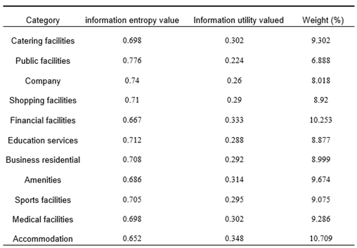

摘要
随着城市的发展以及可持续发展理念的加强，共享经济受到越来越多的关注。共享单车作为一种环保、绿色的出行方式，得到了广泛的引用。但共享单车存在乱停乱放、企业粗放式投放和空间布局不合理等问题亟待解决。
本研究深入分析武汉市共享单车的时空分布特征，旨在为共享单车停放点的选址提供科学依据。研究基于2018年10月的武汉市的摩拜单车的GPS定位信息和POI数据及武汉人口数据，进行数理统计、空间分析、地理探测器分析，并进行优化选址。明确了POI点、公共交通设施及人口密度这些因素与共享单车使用之间的密切关联。在此基础上，采用最大覆盖位置问题（MCLP）模型，建立了共享单车停放点选址模型。通过该模型，结合需求强度的加权计算，确定了最优的停放点布局。总之，这些研究结果强调了基础设施不平等是城市化的一个特征，并表明理解城市不平等需要将不平等视角应用于城市化。
总之，这项研究深化了我们对武汉市共享单车使用的理解，提供了一个选择停车点的模型，并为城市交通规划和可持续性提供了有价值的见解。
研究背景
共享单车作为一种环保、绿色的出行方式，在近年来得到了广泛推广和应用。它具有许多独特的优势。首先，共享单车作为绿色、可持续的交通方式，被视为降低机动车交通出行压力、减少交通污染的重要手段之一。其次，共享单车“随用随停”的特点使其在解决城市交通“最后一公里”问题方面具有重要作用。然而，在实际运营过程中，共享单车也面临一些挑战。其中最明显的问题是乱停乱放现象的出现，这严重影响了城市交通秩序和居民正常生活。其次，共享单车市场处于粗放式投放阶段，很多企业为争夺市场份额投放大量单车，这导致运营成本和资源的浪费。最后，共享单车投放空间布局存在不合理的情况，部分需求点投放量不足甚至没有投放，这与“解决公民出行最后一公里”的初衷背道而驰。因此需要科学合理地选择共享单车的停放点，考虑到人口密度、交通状况和用户需求等因素，以提高共享单车的使用率和便利性。
实验分析
（1）共享单车出行记录时空分布
导入从GPS位置数据中提取的共享单车出行记录，包括单车借用统计表和单车归还统计表。将研究区域划分为大小为 1 km 的网格，并计算每个网格单元内的自行车借用次数和归还次数。最后，提取共享单车目的地分布。
图1：武汉市共享单车在工作日（左）和周末（右）的分布情况
（2）共享单车出行影响因素
1.兴趣点 （POI） 在某种程度上可以代表特定区域的土地开发水平，并可以指示该地区的经济状况。因此，分析POI有助于在共享单车与经济发展之间建立直接联系。通过这一分析，我们发现共享单车的分布与餐饮、购物、金融、商业、生活方式服务、运动休闲等兴趣点之间存在显著相关性。研究结果对研究共享单车的使用模式具有重要意义。为了量化兴趣点对共享单车使用的影响，我们采用熵权法计算每个POI的影响，并通过加权求和得到综合的兴趣点指数。
表1：熵值法权重计算结果
2.共享单车为“最后一英里”的交通挑战提供了重要的解决方案，特别是对于中短途旅行和加强与城市公共交通网络的连通性。现有研究强调了公共交通设施位置对共享单车分布的重大影响。这些设施主要包括地铁站和巴士站。为了评估它们与共享单车分布的相关性，我们对这两种类型的设施进行了单独的分析。在武汉的地铁站分析中，我们采用了不同半径的圆形缓冲区来仔细检查共享单车的借用和归还活动。对于公交车站，鉴于它们在武汉的密集存在，我们采用了半径为 100 米、300 米和 500 米的缓冲区，以确保分析的可靠性，而不会覆盖范围过广。总而言之，共享单车与公共交通设施的接近程度对其利用率有很大影响。我们可以通过测量到设施位置的距离来衡量每个网格单元的公共交通可达性。值得注意的是，地铁站和公交车站对共享单车的使用有明显的影响，因此需要单独评估。
图2：地铁站周边共享单车分布密度（左）、公交站周边共享单车借车点（右上）和还车点（右下）分布
3. 该研究对武汉市共享单车借用和归还点进行了核密度分析，并纳入了2018年武汉市的人口数据。可以得出结论，共享单车的使用频率与人口密度之间存在显著的相关性。在武昌区、汉口区、江汉区等人口密集区，共享单车借还频次最高。
图3: 武汉市共享单车分布核密度图（左）和人口密度图（右）
研究结果
在这项研究中，我们使用遗传算法 （GA） 来求解 MCLP 模型，确定了 500 个共享单车部署点，每个部署点的服务半径为 500 米。我们定义了特定的参数，包括最多 100 次迭代、每代 25 个个体、选择 10 个个体进行繁殖以及 30% 的突变概率，来求解这一模型，使得最终解决方案能够满足需求强度最大这一要求。
图4: 遗传算法基于MCLP模型的共享单车选址结果
本研究主要结合武汉市共享单车出行分布相关的多源地理空间大数据分析。识别影响共享单车分布的重要因素，确定这些因素的权重，定义需求点和候选点，并计算每个需求点的需求强度。基于此，采用遗传算法解决武汉市共享单车优化部署问题。本研究为武汉市共享单车的发展提供了有价值的指导。然而，这项研究仍然存在一些局限性：它仅使用遗传算法作为启发式方法的一部分来解决问题，而没有与其他优化算法或求解器进行比较分析。此外，本研究中使用的共享单车出行数据是在武汉市国庆假期期间记录的，可能与日常出行模式不同。